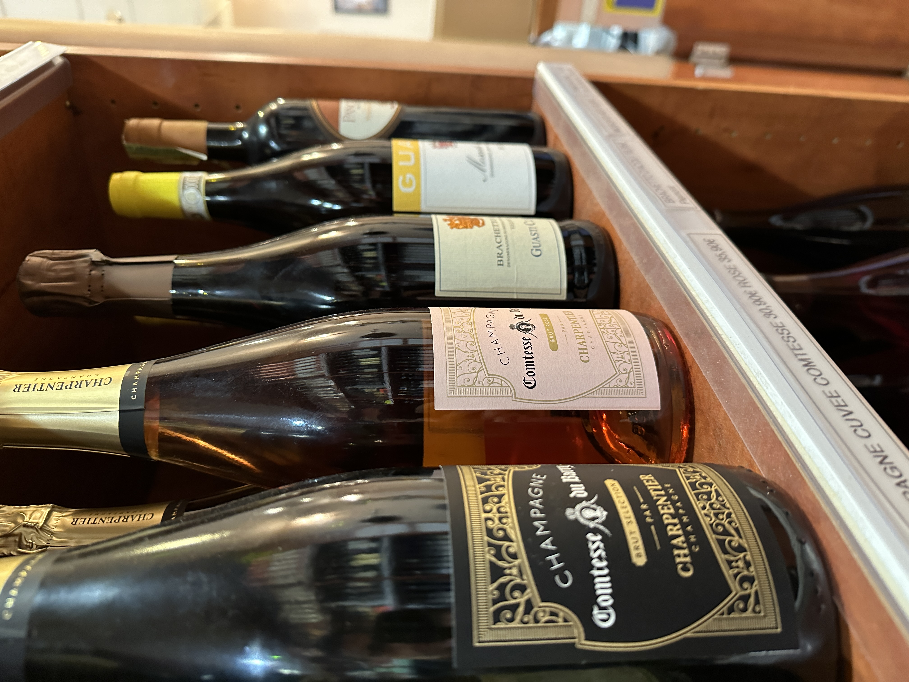
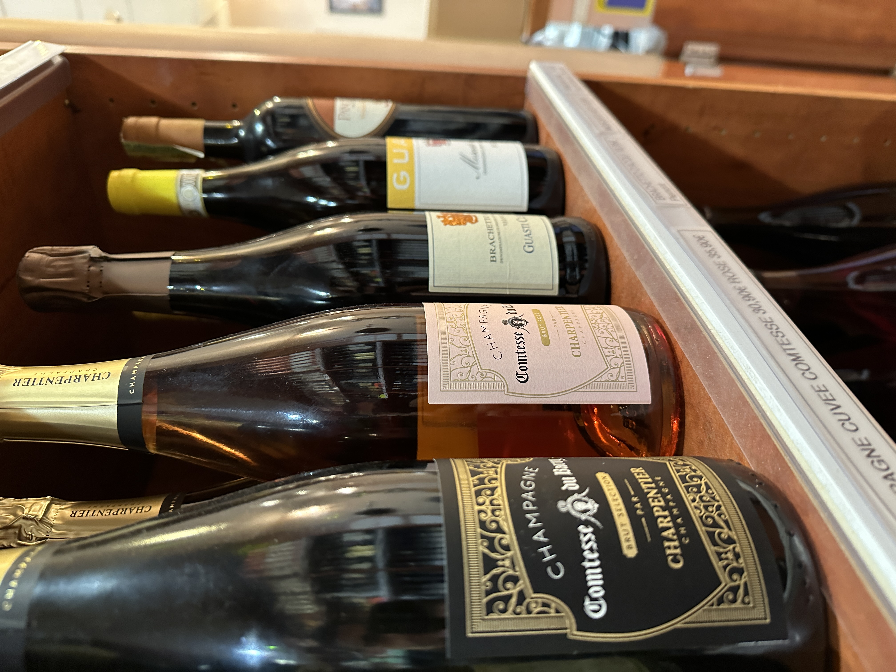

Eric Tartaglia propose dans sa boutique un large choix de produits. Ces derniers sont classés dans deux catégories : les produits secs, tels que les pâtes, le riz ou les conserves et la catégorie fraîche, la plus grande des deux, avec les fromages, la charcuterie, les vins italiens, les pâtes fraîches et les antipasti.
Certains de ces produits sont vendus toute l’année comme les fromages et la charcuterie. Néanmoins, le Comptoir d’Italie met en avant des produits de saison, car le gérant travaille avec des artisans italiens qui permettent de présenter différents plats pour les fêtes.
“On a l’habitude de solliciter des artisans, il y a donc des produits que l’on fait seulement pour les fêtes”, nous explique Eric Tartaglia.
A Noël, on mange des panettones, une brioche aux raisins secs, originaire de la Lombardie et du Piémont. Eric Tartaglia propose également des colombes pour Pâques. La colombe se fabrique avec une pâte semblable au panettone, composée de farine, d'œuf, de sucre, de levure et de beurre, et on peut rajouter des fruits confits. Puis elle est cuite dans un moule en forme de colombe.
Le comptoir : des producteurs aux clients
Écrit par Steven Le Cam et Alexandre GuedesPassionné par les délices italiens, Eric Tartaglia partage son amour pour la cuisine du Latium en présentant des produits frais importés directement d'Italie. Les défis de la collaboration avec les producteurs italiens et les initiatives créatives saisonnières visant à élargir la clientèle dévoilent une approche singulière au sein du panorama culinaire meldois.
 

Des produits variés et des spécialités

Les produits du comptoir sont principalement importés d’Italie. Pourtant Eric Tartaglia éprouve des difficultés à travailler avec les producteurs italiens, ils sont très nombreux et il les estime peu fiables la plupart du temps. Récemment, l’Italie a perdu son titre de premier producteur de vin au monde, laissant l’avantage à la France, à cause de conditions extrêmes et de maladies qui ont touché la plupart des vignobles et ont donc affecté la pousse et la récolte du raisin.
“Les producteurs locaux en Italie, c’est assez compliqué à gérer”, nous confie le propriétaire du comptoir.
Il est donc en contact avec des importateurs de confiance installés à Rungis, qui travaillent avec les producteurs. Ils sont spécialisés en charcuterie, produits laitiers et toutes épiceries espagnols, italiens et corses et sont chargés de la mise en place des produits sur le marché.
Monte Cassino - source : BAIADOMIZA
Le comptoir d’Italie propose des spécialités, comme les pâtes fraîches, le fromage et la charcuterie. Mais il existe de nombreuses spécialités italiennes originaires du Monte Cassino, ville d’origine du gérant de la boutique. Le Monte Cassino se situe dans la région du Latium, à moins de deux heures au sud de Rome. Cette région a été au cœur de plusieurs batailles, de janvier à mai 1944, durant la Seconde Guerre mondiale.
Cette région propose une variété de spécialités locales. Les pâtes all'amatriciana, icônes de la cuisine romaine souvent agrémentées de guanciale et de pecorino romano sont un plat de pâtes typique de la Région de la Lazio, autre nom de la Latium. Les Saltimbocca alla Romana, fines tranches de veau enroulées de jambon de Parme et à la sauge, représentent un aspect culinaire fort de la région. Les Carciofi alla Romana, artichauts à la romaine, offrent une expérience inédite avec leur préparation à l'ail, au persil et à la menthe. Bien sûr nous avons aussi les Bucatini all'Amatriciana, version de la célèbre sauce amatriciana avec des pâtes épaisses. Ces plats forment les spécialités culinaires de la région de la Lazio, nous retrouvons beaucoup de charcuterie et de fromage, tout comme le propose le Comptoir d’Italie.

Une clientèle qui s’élargit
La clientèle du comptoir d’Italie se compose essentiellement de femmes, nous explique Eric Tartaglia. En effet, dans l’imaginaire commun, les femmes cuisinent plus que les hommes à la maison. Selon le propriétaire, elles sont beaucoup plus à la recherche de nouveautés et de bons produits. En général, nous explique le responsable du comptoir, la clientèle est intéressée par les produits de saison, qui font la décoration du magasin, et par les produits italiens les plus connus comme la mozzarella ou les raviolis.

Eric Tartaglia nous explique qu’être installé à Meaux et proposer quelque chose de nouveau est compliqué. Il nous décrit Meaux comme un “No Man’s Land” qui se place entre la ville et la campagne. En effet, Meaux possède un terroir auquel ses habitants sont attachés, ce qui freine l’élargissement de la clientèle voulu par Eric Tartaglia. Le propriétaire est donc forcé de s’en remettre à une stratégie marketing forte basée sur la fidélisation rapide de la clientèle.
La vraie valeur ajoutée du comptoir c’est sa grande variété de produits frais. Tous les produits proviennent d’Italie et pourtant les prix sont abordables malgré l’importation, ce qui contraste avec la plupart des épiceries spécialisées. Eric Tartaglia propose des prix divers pour ses produits, ce qui fait que quelle que soit la classe sociale d’un client, il trouvera toujours des produits dans ses prix.
Pour attirer la clientèle Meldoise, Eric choisit de proposer des produits du terroir Meldois comme le Brie de Meaux qui est une fierté pour les habitants de Meaux. Il choisit aussi de proposer des produits simples comme de l’huile d’olive ou des pâtes fraîches qui sont déjà présentes dans les placards des français, mais qui par leur fraîcheur et leur provenance, attire de nouveaux clients.
Eric Tartaglia étant père, la situation des jeunes étudiants à Meaux le concerne, c’est en écoutant son fils qu'il eut une idée : proposer des pastabox fraîches abordables et du jour-même pour les étudiants. En termes de prix, les pattes préparées par le chef sont entre 4-7€, ce qui fait le bonheur des étudiants de Meaux.
M. Tartaglia agrandit donc sa clientèle passant d’une clientèle essentiellement féminine aux jeunes étudiant en passant par les traditionnelles meldois. Malgré la fermeture de son restaurant dû à la Covid-19, Eric tartaglia a su faire passer son épicerie spécialisée comme une référence de la rue commerçante de Meaux, de nombreux clients tous variées se rendent chaque jour au Comptoir d’Italie.